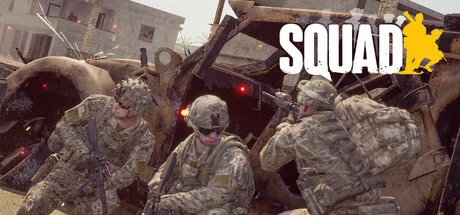

Offworld Industries 打造的大规模硬核战术 FPS，脱胎于《战地2》传奇 MOD《Project Reality》。单局 50v50 一百人同场，你加入九人小队、听小队长和指挥官调度，靠内置语音沟通协同——运补给、建前进基地 FOB、架机枪、开装甲车和直升机、一寸寸争夺据点。没有红点标记、没有一人屠城，机瞄、弹道下坠、压制与医疗兵救援让每一枪都生死攸关。节奏慢、门槛高，沟通即生命。2022 已超 300 万销量，Steam 特别好评，腾讯代理国服《破晓攻势》2026 运营。
想象一张十六平方公里的真实地形战场：东欧的针叶林、中东的断壁残垣、东亚沿海的滩涂村庄。两支各五十人的军队在这里对峙——没有剧本、没有主角，你只是一百人同场里的一名普通士兵。你加入一支九人小队，耳机里是小队长的部署、指挥官的调度，和子弹擦过耳边时队友压低嗓子的那句「趴下」。这是《战地2》传奇 MOD《Project Reality》的精神续作，一场把「真实」刻进骨子里的现代战争。
可这场仗打起来，和你玩过的任何射击游戏都不一样。中弹往往一两发就倒地，腿挨一枪就跑不动，得喊医疗兵冒着火力把你拖回掩体。没有红点标记，只有机瞄和子弹下坠；机枪一响，屏幕收窄、准星乱抖，你本能地缩回战壕。一局动辄半小时到几个钟头，你可能有大半时间在运补给、修工事、当电台中继——真正开枪击杀的，一百人里也许不到十个。
但正是这种「慢」，逼出了别的游戏给不了的东西。当一群陌生人靠一副麦克风拧成纪律之师，你会突然明白：这里最强的武器从来不是枪法，而是你愿不愿意开口沟通、愿不愿意为队友多跑一趟补给。这不是一个关于个人英雄的故事，而是一个关于「一群人如何成为一支队伍」的故事——下一盘，你会是那个把大家喊到一起的人吗？
纪实级军事写实 × 大规模战场尘土感，是把真实战争的粗粝与克制搬进游戏的硬核美学。底色是照现实还原的现代军武——各国现役制服涂装、按型号建模的枪械与坦克直升机、卫星地形还原的十六平方公里战场；变异在于它刻意反炫酷、反英雄，没有夸张特效和华丽击杀，只有压制时收窄的视野、中弹就倒的致命感。色彩锁定军绿橄榄 × 尘土沙黄的低饱和组合，整体调性是一种让人紧绷、不敢乱动的战场真实感。
「大规模军事写实」的视觉共识走了二十多年。1987 年库布里克《全金属外壳》把战争的去浪漫化、冷峻纪实质感立成标杆。2005 年《战地2》的 MOD《Project Reality》第一次把「真实团队协作 + 后勤补给」做进大规模 FPS，定义了这套玩法美学的雏形。2008 年美剧《杀戮一代》用手持纪录片式镜头还原伊拉克战争的琐碎与真实。2013 年《武装突袭 3》把军事模拟的拟真度推到沙盒级高度。2020 年《战术小队》正式版集大成——把百人战场、机瞄弹道、压制医疗与尘土写实焊到一起，成了硬核战术 FPS 的标杆。
基于体验清单 · 审美偏好 · IP故事三维度综合选出
点击链接跳转到对应平台查看 · 仅整理外部链接